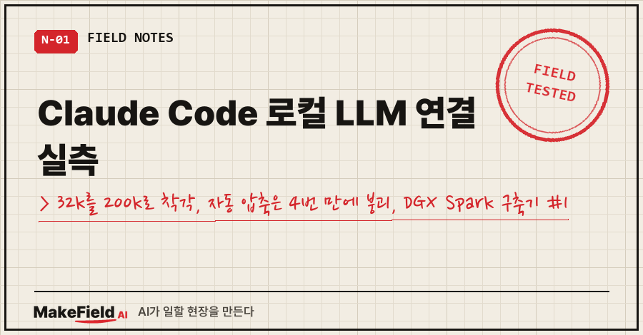
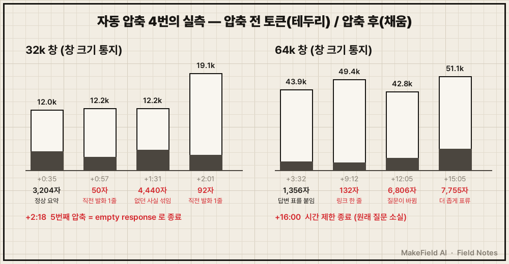
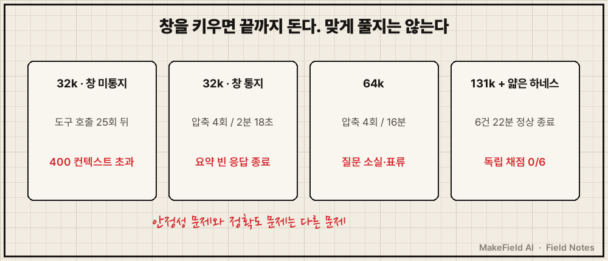

Claude Code는 환경변수 몇 개로 로컬 llama.cpp 서버에 그대로 붙는다. 문제는 그다음이다. 32k로 띄운 서버를 Claude Code는 200k로 알고 달리다가 도구 호출 25회 만에 400으로 죽었다. 창 크기를 알려 주자 자동 압축이 2분 18초 동안 4번 돌았고, 4번의 요약 중 2번은 요약이 아니라 "직전 발화 한 줄"이었다. 64k에서는 두 번째 압축 요약이 링크 한 줄로 끝나면서 원래 질문이 사라졌다. 131k에서야 6건이 모두 끝까지 돌았는데, 독립 채점에서는 6건 모두 완료 기준 미달이었다.
이 연재는 DGX Spark 2대에 로컬 LLM을 올리며 겪은 일을 빌드 커밋·플래그·환경변수·로그 원문·실측 수치 단위로 남기는 기록이다. 입문 설명은 뺐다. 수치는 문장마다 실측 / 추정 / 미측정을 구분했고, 1회 측정이면 1회라고 적었다.
1. 환경
| 항목 | 값 |
|---|---|
| 장비 | NVIDIA DGX Spark ×2 (GB10, compute capability 12.1, 통합메모리 128GB — llama.cpp 인식 124,608MiB, ARM64 20코어) |
| OS·드라이버 | Ubuntu 24.04.5, 드라이버 580.178.04, CUDA 13.0 |
| 추론 엔진 | llama.cpp 0.8.0-dev commit 162e2bb(2026-11-04), 소스 빌드 |
| 모델 | unsloth/Qwen3.6-35B-A3B-MTP-GGUF / Qwen3.6-35B-A3B-UD-Q4_K_XL.gguf (22.85GB, 5.15 BPW, MoE 256 experts / 활성 8) |
| 하네스 | Claude Code 2.1.322 (실행 파일 무수정) |
| 연결 | 같은 장비 루프백, 또는 2호기 서버를 QSFP 직결 SSH 터널로 1호기에 노출 |
빌드:
cmake -B build -DGGML_CUDA=ON -DCMAKE_CUDA_ARCHITECTURES=121a-real -DGGML_NATIVE=ON -DGGML_CURL=OFF
cmake --build build -j121a-real은 GB10(sm_121)용이다. NVIDIA의 DGX Spark playbook 방식과 같고 GGML_CURL=OFF만 다르다.
서버 (첫 실험 기준):
llama-server \
--model ~/models/Qwen3.6-35B-A3B-UD-Q4_K_XL.gguf \
--alias qwen3.6 --host 127.0.0.1 --port 30000 \
--ctx-size 32768 --parallel 1 \
--n-gpu-layers 99 --flash-attn on --jinja --metrics--jinja로 GGUF에 내장된 채팅 템플릿(도구 호출 포맷 포함)을 쓰게 했다. 에이전트 하네스를 물릴 때 도구 호출 포맷이 어긋나면 그 뒤 실험은 전부 의미가 없어서, 템플릿 경로를 명시적으로 고정했다.
2. 왜 Claude Code를 그대로 붙였나
처음엔 로컬 모델용 실행기(에이전트 루프)를 직접 짰다. 도구 정의, 재시도, 검증 단계를 덧붙일수록 시험 장치만 커지고 정작 쓸 만한 결과물은 안 나왔다.
방향을 바꾼 건 이 판단이었다. Claude Code의 에이전트 루프(입력 → 컨텍스트 조립 → 모델 호출 → 도구 실행 → 결과 재투입 → 압축)는 공개 분석이 많이 나와 있는 검증된 구조다. 구조를 새로 발명하지 말고, 검증된 루프에 로컬 모델을 그대로 끼워서 모델의 한계가 어디인지부터 재자. 하네스 차이와 모델 차이를 섞지 않으려면 하네스를 고정하는 게 맞다.
3. 연결 — 환경변수만으로 붙는다
llama.cpp llama-server는 Anthropic 호환 엔드포인트(/v1/messages)를 제공한다. tool_use 왕복도 된다.
export ANTHROPIC_BASE_URL=http://127.0.0.1:30000
export ANTHROPIC_AUTH_TOKEN=local
export ANTHROPIC_API_KEY=
export ANTHROPIC_MODEL=qwen3.6
export ANTHROPIC_SMALL_FAST_MODEL=qwen3.6
export ANTHROPIC_DEFAULT_OPUS_MODEL=qwen3.6
export ANTHROPIC_DEFAULT_SONNET_MODEL=qwen3.6
export ANTHROPIC_DEFAULT_HAIKU_MODEL=qwen3.6
export CLAUDE_CODE_SUBAGENT_MODEL=qwen3.6
export CLAUDE_CODE_DISABLE_NONESSENTIAL_TRAFFIC=1
claude포인트 두 가지.
- 모델 별칭을 전부 덮어야 한다. 메인 모델만 바꾸면 Claude Code가 내부적으로 쓰는 소형 모델·서브에이전트 호출이 원래 모델 이름으로 나가서 로컬 서버가 모르는 이름을 받는다.
--alias와 환경변수 이름을 하나로 맞췄다. ANTHROPIC_API_KEY는 비워 두고ANTHROPIC_AUTH_TOKEN에 아무 값이나 넣었다. 로컬 서버에 키를 걸었다면 그 키를 넣으면 된다.
스모크 테스트
과제: "log.csv에서 temp가 최저인 행의 ch 값은?" (작은 CSV, 정답 b)
결과(1회): 6턴, 15.5초, 정답. 처음에 경로를 잘못 짚어 Read가 실패하자, 스스로 find·ls로 파일 위치를 찾고 다시 Read해서 답을 냈다. 루프의 자기 수정 동작이 로컬 모델에서도 그대로 돈다.
다만 프롬프트에 "python으로 계산하라"고 적었는데 따르지 않고 눈으로 읽어 답했다. 이 습관이 뒤에서 큰 문제가 된다.
그리고 이상한 점 하나. Claude Code가 이 모델의 컨텍스트 창을 200,000 토큰으로 잡고 있었다. 서버는 32,768이다.
4. 실전 과제 — 창 크기별로 무너지는 방식
스모크 테스트 대신 실제 규모의 과제를 줬다.
장비 시계열 로그(parquet, 파일 170여 개, 수백만 행)에서 전 기간 중 온도가 가장 낮았던 시각과 센서를 찾아라.
함정이 하나 있었다. 로그 열 이름이 기간마다 바뀐다. 같은 센서가 어떤 파일에선 a_circ_temp, 다른 파일에선 ak_circ_temp 식으로 나온다(예시는 가공). 파일 전체의 열 합집합이 2천 개를 넘는다. DuckDB로 한 번에 읽으려면 union_by_name=true가 필요하다.
아래 로그는 전부 Claude Code가 남긴 세션 기록(~/.claude/projects/<프로젝트>/<세션ID>.jsonl)에서 그대로 뽑았다. 압축 수치는 compact_boundary 레코드의 compactMetadata(preTokens·postTokens·durationMs) 값이다.
4-1. 32k 서버, 설정 그대로 → 도구 호출 25회 뒤 컨텍스트 초과
Claude Code는 창이 200k라고 믿으니 압축을 걸지 않는다. 분석은 정상적으로 진행됐다. 파일을 훑고, 열을 찾고, 쿼리를 돌렸다. 시작 2분 50초 뒤, 도구 호출 25회째에 서버가 요청을 거부했다.
API Error: 400 request (40118 tokens) exceeds the available context size (32768 tokens), try increasing it원인(확정): 클라이언트가 아는 창(200k)과 서버의 실제 창(32k)이 다르면 압축 기준선이 오지 않는다. 대화가 쌓여 32k를 넘는 순간 그냥 죽는다. 마지막 요청이 32,768을 7천 토큰 넘게 초과한 건 쿼리 결과 같은 큰 도구 출력이 한 턴에 통째로 들어갔기 때문으로 본다(추정).
4-2. 32k 서버, 창 크기 알려 줌 → 2분 18초 동안 압축 4번, 그리고 빈 응답
export CLAUDE_CODE_MAX_CONTEXT_TOKENS=32768이번엔 자동 압축이 발동했다. 세션 기록에 남은 4번의 압축은 이렇다(1회 실행).
| # | 경과 | 압축 전 토큰 | 압축 후 | 압축 소요 | 압축 후 요약 본문 |
|---|---|---|---|---|---|
| 1 | +0:35 | 11,983 | 3,735 | 20.2초 | 3,204자, 정상 구조 요약 |
| 2 | +0:57 | 12,217 | 2,677 | 12.2초 | 50자 — 직전 발화 한 줄 |
| 3 | +1:31 | 12,248 | 4,057 | 23.9초 | 4,440자, 구조는 갖췄지만 대화에 없던 사실이 섞임 |
| 4 | +2:01 | 19,117 | 3,092 | 14.3초 | 92자 — 직전 발화 한 줄 |
| 5 | +2:18 | — | — | — | 실패 |
2번째와 4번째 압축 뒤 "요약"으로 남은 본문 전체가 이것이다.
# 2번째 압축 후 요약 본문 전체 (50자)
Found the data. Now let me analyze it with DuckDB.
# 4번째 압축 후 요약 본문 전체 (92자)
Good - the actual path is through `log_pool` symlink. Let me explore the parquet schema now.그리고 다섯 번째 압축 시도에서 세션이 끝났다.
Prompt is too long · automatic compaction failed: summarization produced empty response
읽을 수 있는 것(확정, 세션 기록 기준):
- 압축 호출이 "요약하라"는 지시를 따르지 않았다. 2번과 4번의 결과는 요약이 아니라 모델이 대화를 그냥 이어 간 다음 발화다. Claude Code는 그걸 요약 자리에 그대로 넣었다.
- 3번은 형식은 요약인데, 파일 형식을 parquet이 아니라 CSV라고 적는 등 대화에 없던 사실이 들어갔다. 압축은 손실 압축이고, 손실의 방향을 모델이 정한다.
- 요약이 비거나 엉뚱하면 압축 뒤의 모델은 "지금까지 뭘 했는지"를 모른다. 그래서 다시 탐색하고, 탐색 결과가 쌓여 30초 안팎 만에 다시 압축 기준선에 닿는다. 압축 간격이 22~34초였다.
추정(미측정 — 다음 편에서 확인):
- 32k에서 압축은 대화 토큰 약 12k에서 걸렸다. 64k에서는 43k~51k였다. 두 경우 모두 창 크기에서 약 2만 토큰을 뺀 지점 근처다(32,768 − 20,000 ≈ 12.8k, 65,536 − 20,000 ≈ 45.5k). Claude Code가 출력·압축용으로 고정 분량을 예약하고 나머지를 대화에 쓰는 구조라면, 창이 작을수록 대화에 쓸 몫이 비율로 급격히 줄어든다. 32k에서는 창의 약 37%만 대화에 쓴 셈이다.
- 여기에 매 요청마다 시스템 프롬프트와 도구 정의(JSON 스키마) 묶음이 붙는다. 이 고정 비용은
/tokenize로 다음 편에서 잰다.
교훈: 32k는 Claude Code급 하네스를 돌리기엔 창이 아니라 우물이다. 압축이 작동하려면 압축 호출이 들어갈 여유와, 그 호출을 제대로 수행할 모델의 지시 준수가 둘 다 있어야 한다.
4-3. 64k 서버 → 문제는 풀었는데, 두 번째 압축에서 질문이 사라짐
2호기에 같은 모델을 --ctx-size 65536으로 띄우고 QSFP 직결 SSH 터널로 1호기에 붙였다. 서버 명령은 포트와 --ctx-size 두 개만 달랐고, 창 크기도 서버 값으로 알렸다.
여기서 처음으로 모델다운 장면이 나왔다.
- 열 이름이 바뀌는 함정을 스스로 풀었다. 파일별 스키마가 다르다는 걸 알아채고
union_by_name으로 읽어 전체 행 수(800만 행대)를 정확히 맞췄다. - 첫 압축(+3:32) 전에 답까지 도달했다. 최저 온도 날짜는 맞았다. 다만 같은 최저값을 가진 다른 센서들, 그리고 여러 채널이 같은 초에 동시에 0이 된 사건은 빠뜨렸다.
그다음 4번의 압축이 이렇게 흘렀다(1회 실행).
| # | 경과 | 압축 전 토큰 | 압축 후 | 압축 소요 | 압축 후 요약 본문 |
|---|---|---|---|---|---|
| 1 | +3:32 | 43,858 | 4,764 | 26.4초 | 1,356자 — 요약 대신 최종 답변 표를 그대로 붙임 |
| 2 | +9:12 | 49,391 | 4,210 | 26.7초 | 132자 — 대화 원본 링크 한 줄 |
| 3 | +12:05 | 42,827 | 6,640 | 43.0초 | 6,806자, 구조 요약. 그런데 "원래 요청"이 바뀜 |
| 4 | +15:05 | 51,108 | 11,754 | 72.8초 | 7,755자, 특정 날짜의 극단값 조사로 더 좁혀짐 |
2번째 압축 뒤 요약 자리에 남은 것 전체:
<a href="file:///home/<user>/.claude/projects/-tmp-cc-probe4/e6993f6f-....jsonl">Full conversation</a>(사용자 이름과 세션 ID 뒷부분만 가렸다.)
3번째 압축 요약의 첫 항목이 결정적이다.
1. **Primary Request and Intent:**
- Analyze temperature sensor data quality across multiple [...] sensor channels [...]
- Identify anomalies, missing data patterns, and unusual readings
- Understand system behavior during high temperature events(채널·장치 이름은 [...]로 가렸다.)
원래 질문은 "전 기간 최저 온도의 시각과 센서"였다. 3번째 요약에서는 그게 "온도 센서 데이터 품질 분석, 고온 이벤트 조사"로 바뀌어 있다. 메커니즘(확정, 기록 기준): 2번째 요약이 링크 한 줄이라 원래 질문이 다음 컨텍스트에서 사라졌고, 3번째 압축은 그 직후 하고 있던 탐색(데이터 품질 점검)을 "원래 요청"으로 재구성했다. 4번째 요약은 거기서 특정 날짜 조사로 더 좁혀졌다. 결국 원래 질문과 상관없는 분석을 하다 16분 시간 제한에 걸려 끝났다.
이 단계에서 프로세스가 exit 137(SIGKILL — 메모리 부족 추정)로 두 번 죽기도 했다. 이건 실험 기록에만 남아 있고 프로세스 출력은 보존하지 않아 원문이 없다.
64k에서 배운 것: 압축 요약 하나가 망가지면 그다음 요약은 망가진 상태를 "사실"로 굳힌다. 64k는 압축 간격이 3~6분으로 32k(22~34초)보다 6~10배 길었지만, 압축 품질이 모델 몫이라는 점은 그대로였다.
4-4. 131k 서버 + 얇은 하네스 → 6건 모두 끝까지 돌았다. 그리고 6건 모두 틀렸다
# 서버: --ctx-size 131072 --parallel 1 (+ 비전용 --mmproj)
export CLAUDE_CODE_MAX_CONTEXT_TOKENS=131072
export CLAUDE_CODE_AUTO_COMPACT_WINDOW=131072
export CLAUDE_AUTOCOMPACT_PCT_OVERRIDE=80
export CLAUDE_CODE_MAX_OUTPUT_TOKENS=16000창만 키운 게 아니라 작업 공간도 손봤다. 전부 Claude Code의 기본 기능이다.
CLAUDE.md를 짧게: 데이터가 어디 있는지, 열 이름 규칙, 쓸 도구, 답변 규칙만- 열 카탈로그 CSV: 2천여 개 열의 이름·의미·단위·옛 이름↔새 이름 대응을 미리 만들어 둠 (모델이 매번 스키마를 탐색하지 않게)
- 집계 CLI 하나:
cols / extreme / zeros / series / sql하위 명령. 파일 전체를 DuckDB로 한 번에 훑어 7초 안에 끝나게 settings.json은 데이터 폴더 쓰기·sudo·rm -rf금지만
결과: 실전 질문 6건, 22분, 6건 전부 정상 종료. 32k·64k에서 보던 압축 붕괴는 한 번도 없었다.
그런데 다른 AI에게 답을 가리고 독립 채점을 맡겼더니 6건 모두 완료 기준 미달이었다. 내가 1차로 "통과"라고 본 3건도 철회했다. 내 채점이 후했다.
틀린 방식이 공통적이었다.
| 실패 유형 | 실제 사례 |
|---|---|
| 머릿속 계산 | 지식형 질문 3건에서 도구 호출 0회. 수두(압력) 계산을 눈대중으로 하다 10배 작게 냄(113 Pa vs 1,111 Pa) |
| 고정값을 신호로 오인 | 센서가 고장으로 특정 값에 붙어 있는 구간(고착값)을 "최댓값"으로 보고 |
| 미확정 원인 단정 | 근거가 둘 이상인 원인을 하나로 단정, 안전 관련 판단을 확인 없이 단정 |
| 의심값 미보고 | 0이 여러 채널에서 같은 초에 찍힌 "이상한 0"을 그냥 넘어감 |

5. 정리 — 로컬 모델에 Claude Code급 하네스를 물릴 때
| 점검 항목 | 왜 | 우리 값 |
|---|---|---|
| 클라이언트에 실제 창 크기 알리기 | 안 알리면 압축 기준선이 안 와서 그냥 죽음 | CLAUDE_CODE_MAX_CONTEXT_TOKENS = 서버 --ctx-size ÷ --parallel |
| 창 64k 미만이면 Claude Code급 하네스 쓰지 말 것 | 고정 예약분을 빼면 대화 몫이 거의 안 남음 | 32k: 2분 18초에 압축 4회, 요약 2회가 직전 발화 1줄 |
| 압축 요약을 믿지 말고 확인할 것 | 요약 하나가 망가지면 다음 요약이 그걸 굳힘 | 64k: 2번째 요약 = 링크 한 줄 → 질문 소실 |
| 압축 기준을 일찍 | 압축 호출이 들어갈 자리 확보 | 80% |
--parallel이 창을 나눈다 | --ctx-size 262144 --parallel 2면 1인 131k | 5편에서 실측 |
| 모델 별칭 전부 덮기 | 서브에이전트·소형 모델 호출이 엉뚱한 이름으로 나감 | ANTHROPIC_DEFAULT_*_MODEL, CLAUDE_CODE_SUBAGENT_MODEL |
| 스키마 탐색을 모델에 맡기지 말 것 | 탐색 턴이 창을 먹고, 압축 때 잃음 | 열 카탈로그 CSV + 집계 CLI |
| 창을 키워도 정답률은 안 오른다 | 창은 "끝까지 도는 것"만 해결 | 131k: 6/6 종료, 0/6 완료 기준 충족 |
마지막 줄이 이번 실험의 결론이다. 32k → 131k로 바꾼 건 프로세스 안정성 문제였고, 정확도 문제는 그대로 남았다. 남은 실패는 전부 "계산을 도구로 하지 않는다", "모르는 걸 단정한다" 쪽이다. 이건 컨텍스트가 아니라 지시 준수와 판단의 문제고, 다음 실험(검산 강제·단정 금지 규칙·고착값 검출 명령 추가)에서 다룬다.
세션 기록을 직접 뜯어 보고 싶다면 이 한 줄이면 된다. 압축이 일어날 때마다 compact_boundary 레코드가 남는다.
grep -h '"compact_boundary"' ~/.claude/projects/*/*.jsonl | python3 -c "import sys,json;[print(json.loads(l).get('compactMetadata')) for l in sys.stdin]"6. 다음 편
- 2편: GB10의 273GB/s를 산수로 풀면 dense 70B는 왜 안 되고 MoE는 왜 되는가 — Qwen3.6-35B-A3B 67.7 tok/s(MTP 켜면 97.9), gpt-oss-120b 58.3 tok/s 실측과, 투기적 디코딩이 오히려 31% 느려진 경우
- 이번 편에서 못 잰 것: Claude Code 요청당 고정 토큰 비용(
/tokenize실측), 압축 기준선이 "창 − 약 2만"이라는 추정의 검증, 64k에서 압축 기준 %를 낮췄을 때 2번째 압축 생존 여부
로컬 LLM을 실제 업무 하네스에 물리는 작업을 하고 있다면, 어디서 막혔는지 댓글로 남겨 주면 다음 편 실험에 넣어 보겠다.